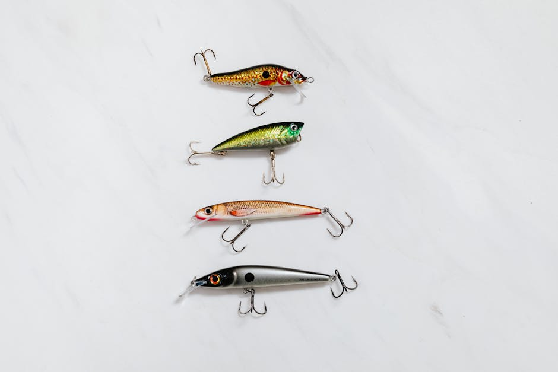

Late ice is the most underutilized opportunity in fishing. Most anglers have already put their gear away, but the last two weeks of ice produce some of the best walleye action of the entire year. The key adjustment most anglers miss is line diameter. As ice thins and light penetrates deeper water, walleye become line-shy — they see the main line and become cautious. Dropping from 6lb to 4lb test fluorocarbon makes a dramatic difference in bite detection and hookup rates. You'll feel subtle strikes that would previously be masked, and the thinner diameter sinks faster, keeping your presentation in the strike zone longer. Additionally, downsizing your jig from 3/8oz to 1/4oz matches the more subtle feeding window of late-season walleye. Combine both and your ratio climbs dramatically.
📰 New catch-and-release regulations for 2026 will require barbless hooks on designated water — check your state regulations for specific waterways affected.
📷 Photo by {photo['photographer']} on Pexels
← Back to Tight Lines